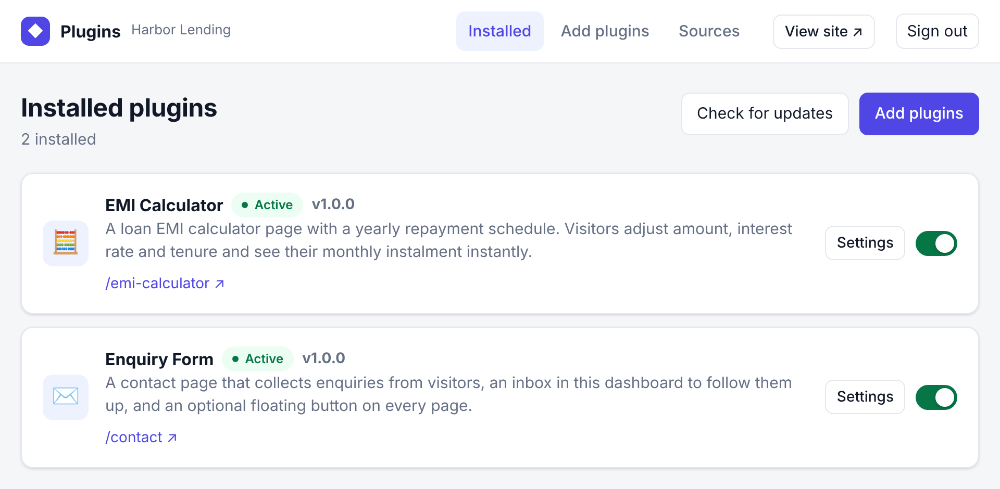

Add it to a Next.js site
Dashboard, API route, plugin pages and layout slots, wired into an existing App Router project.
Read it yourselfWordPress-style plugins for Next.js
Add one package to a site. Its owner then installs plugins from GitHub repositories: pages, endpoints, widgets and settings, with no rebuild and no redeploy.
Each address is a complete guide in Markdown, written to be followed step by step. Paste it into Claude Code, Cursor or any agent that can read a URL.
Dashboard, API route, plugin pages and layout slots, wired into an existing App Router project.
Read it yourselfA plugin repository from scratch: manifest, components, server code, and what to put in CLAUDE.md.
Read it yourself
cacheComponents: true the build fails.